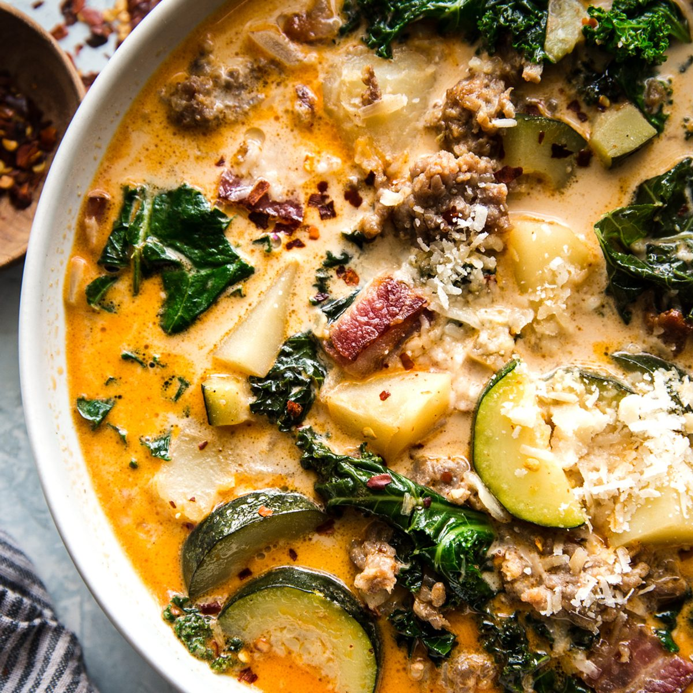

Zuppa

Description
This is a copycat recipe based on the Olive Garden soup Zuppa Toscana. It is pretty easy to make and can be altered to be a low carb option. Read below for the recipe!
Ingredients
- Onion
- Garlic
- Pancetta or Bacon
- Spicy Italian Sausage
- Kale
- Chicken Broth
- Heavy Creme
- Potatoes or Califlower
- Seasioning of choice
- Cheese of choice
Steps
- Cook Bacon and then set aside
- In the same pan that bacon was cooked in, brown onion and garlic then add italian sauages
- remove meat from pan
- Add chicken stock and potatoes and bring to a boil
- when potatoes are tender add in bacon and sausage
- 5 min later add in kale and let simmer
- Season soup to taste
- Stir in heavy cream and cheese